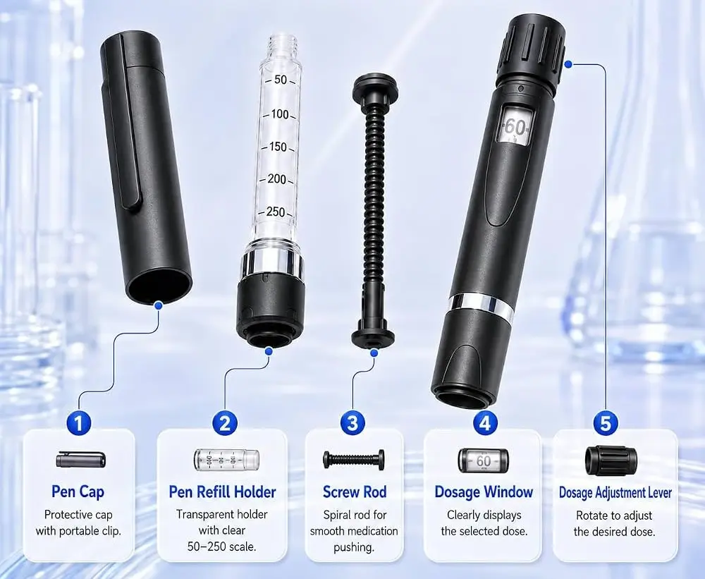

Zo werkt een peptidepen
Een peptidepen bevat een cartridge met vloeistof en stelt met een draaiknop een volume in. Deze pagina beschrijft het apparaat, de twee manieren waarop onderzoekers een pen klaarmaken en de rekensom achter de instelling.
De draaiknop van een pen stelt een volume vloeistof in, geen milligrammen peptide. De sterkte van de vloeistof bepaalt wat elke instelling voorstelt. Sommige pennen komen voorgevuld. Andere vult de onderzoeker zelf uit een opgelost flesje, en daarvoor gebruiken onderzoekers gewoonlijk 3 mL bacteriostatisch water.

De onderdelen
- Pendop. Een beschermdop, meestal met een clip.
- Vulhouder. Een heldere houder met een afgedrukte schaal. Hierin zit de vloeistof.
- Schroefstang. Een spiraalstang die de zuiger verplaatst als de knop draait.
- Instelvenster. Toont het getal waarop de knop staat.
- Instelknop. Door eraan te draaien verandert de instelling.
Een pen met cartridge werkt hetzelfde, met een afgesloten cartridge in plaats van de vulhouder. Beide gebruiken een steriele pennaald in een verzegelde dop.
Welke route is de jouwe?
Pennen komen op twee manieren bij onderzoekers terecht. Open de route die bij jouw pen past.
A Mijn pen is voorgevuldDe vloeistof zit er al in
Er hoeft niets te worden opgelost. De sterkte staat op de pen of de verpakking, meestal als mg per mL of mg per cartridge. Dat afgedrukte getal is het getal dat de rekensom hieronder gebruikt.
Staat de sterkte er niet op, dan weet de leverancier of fabrikant haar. Onderzoekers raden haar gewoonlijk niet. Gangbare praktijk
B Ik vul hem zelf uit een flesjeHet poeder wordt eerst opgelost
Los het flesje op
Los het flesje op met bacteriostatisch water. Onderzoekers gebruiken voor een pen gewoonlijk 3 mL. Gangbare praktijk
Bereken de sterkte
Vul de massa van het flesje en het watervolume in de rekenhulp in. De regel Sterkte (mg per mL) is het getal waar de instelling van de pen van afhangt.
Vul de vulhouder
Breng de opgeloste vloeistof met een steriele spuit over in de vulhouder, tot aan de streep op de afgedrukte schaal. De bijsluiter van de fabrikant geeft de vulmethode voor die pen.
Etiketteer hem
Schrijf de sterkte en de datum van oplossen op de houder of de pen. Gangbare praktijk
Waarom de sterkte ertoe doet
De knop heeft een schaal in eenheden of milliliters. Beide zijn volumes. Om te weten hoeveel peptide een instelling voorstelt, is de sterkte van de vloeistof nodig: het afgedrukte getal bij een voorgevulde pen, of het berekende getal bij een pen die uit een flesje is gevuld.
Voordat ze de knop instellen, controleren onderzoekers gewoonlijk drie dingen: de sterkte op de cartridge of het etiket van het flesje, de sterkte die de berekening veronderstelde en het volume dat in de cartridge over is. Komen die drie niet overeen, dan stoppen ze en controleren opnieuw. Gangbare praktijk
De pen instellen
Controleer de sterkte
Vergelijk het etiket, de berekening en het volume dat in de cartridge over is.
Maak het afdichtrubber schoon
Veeg het rubberen afdichtinkje van de pen af met een alcoholdoekje en laat het drogen.
Plaats de naald
Haal de buitenste dop eraf, zet de naald op de pen en draai hem vast.
Stel de knop in
Draai de knop tot het venster het berekende volume toont. De knop klikt bij elke stap.
Volg de bijsluiter
Voor het gebruik geldt de bijsluiter die bij de pen zit. Deze site beschrijft alleen het apparaat en de rekensom.
Verwijder de naald
Zet de beschermkap op de naald, schroef de naald los en doe hem in een naaldencontainer. Leg de pen terug in de koude opslag.
Voorbeeld: een onderzoeker zet een pen klaar
Deze video laat zien hoe een pen gewoonlijk wordt klaargezet en gebruikt. Gangbare praktijk
Video van derden (Engelstalig): How to Use Your Peptide Pen: Step-by-Step Guide op YouTube. Waar de video afwijkt van de bijsluiter van de fabrikant, gaat de bijsluiter voor.
Aandachtspunten
- Onderzoekers controleren gewoonlijk voor elk gebruik in het venster hoeveel vloeistof er nog is. Gangbare praktijk
- Een nieuwe naald voor elk gebruik is gangbare praktijk. Gangbare praktijk
- Draait de knop niet of lijkt de cartridge leeg, stop dan en vraag het de fabrikant of leverancier.